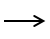

Numbers are related to each other
Cardinal
3 > 2 > 1
Ordinal
1  2 3
Arithmetic
1 + 2 = 3
3 - 2 = 1
1 x 2 x 3 = 6
Complex Relations
2 X + 1 = 3
Fraction
More...
Talk about spetial related
Talk about the model and present data
Talk about testing method
Research Question 1
Research Question 2
Research Question 3
Talk about take-home message